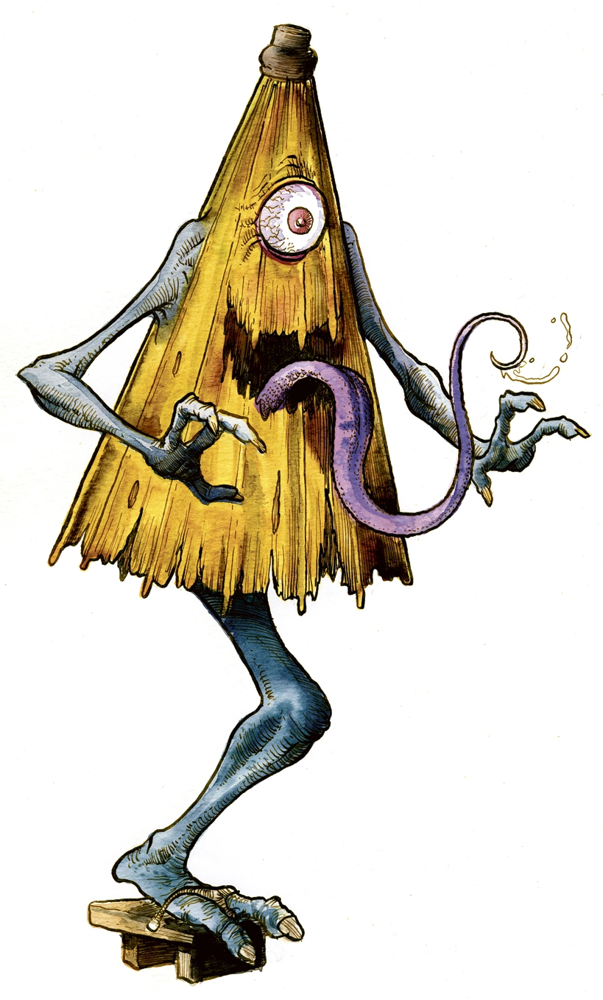

Kasa-obake (Japanese: 傘おばけ)[2][3] are a mythical ghost or yōkai in Japanese folklore. They are sometimes, but not always, considered a tsukumogami that old umbrellas turn into. They are also called "karakasa-obake" (から傘おばけ),[2][4] "kasa-bake" (傘化け),[5] and "karakasa kozō" (唐傘小僧).

They are generally umbrellas with one eye and jump around with one leg, but sometimes they have two arms or two eyes among other features,[2][6] and they also sometimes are depicted to have a long tongue.[3] Sometimes, but rarely, they even have two feet, as depicted in the yōkai emaki such the "Hyakki Yagyo Zumaki".[1] In the Hyakki Yagyo Emaki from the Muromachi period, yōkai that appeared as umbrellas could be seen, but in this emaki, it was a humanoid yōkai that merely had an umbrella on its head and thus had a different appearance than that resembling a kasa-obake.[7] The kasa-obake that took on an appearance with one eye and one foot was seen from the Edo period and onwards, and in the Obake karuta made from the Edo period to the Taishō period, kasa-obake with one foot could often be seen.[7] In the yōkai sugoroku "Mukashi-banashi Yōkai Sugoroku (百種怪談妖物双六)" the Ansei era, a kasa-obake was depicted under the name "One-footed from Sagizaka (鷺坂の一本足, Sagazaka no Ippon Ashi)."[8] Among the many non-living or still object yōkai depicted in the "Hyakki Yagyo Emaki", only the umbrella yōkai can be seen to have remain well-known even after the Edo period,[9] and it is said to be the most well-known yōkai of an object.[7] They frequently appear in legends and caricatures,[7][10] and as opposed to how they are a yōkai that is unusually well-known, they do not appear in any eye-witness stories in folklore at all,[7] and it is not clear what kind of yōkai they are.[2] Literature about them are not accompanied by folktales, and thus they are considered to be a yōkai that appear only in made-up stories[10] or exist only in pictures.[7] After the war, there was also the interpretation that their existence was on the same level as manga characters.[7] One possibility is that when Hyakumonogatari Kaidankai became popular in the Edo period, the story-tellers were requested to tell new stories about yōkai that were not yet known throughout society, and thus they were a yōkai created by individuals.[11] It's thought that everyday objects have an ability to become apparitions over time (usually at least 100 years). These are called tsukumogami, and some literature consider this yōkai to be one example of them,[3][12] but it has not been confirmed that there are any classical literature or classical essays that verify this.[2] After the war, they became a representative character for depictions of obake and haunted houses[2][4] and are frequently used as characters in anime, manga,[3] and films that have a theme based around yōkai.[5]
These are not kasa-obake, but in folktales, as an umbrella yōkai, in the Higashiuwa region, Ehime Prefecture, there is a story that a rain umbrella would appear in valleys on rainy nights, and those who see it would cower and not be able to move their feet. Also, in Mizokuchi, Tottori Prefecture (now Hōki, Saihaku District), there is a yōkai called yūreigasa (幽霊傘, "ghost umbrella") that has one eye and one foot like the kasa-obake, but it is said that on days of strong wind, they would blow people up into the skies.